Note
Click here to download the full example code
The HSIC sensitivity indices: the Ishigami model¶
import openturns as ot
import openturns.viewer as otv
from openturns.usecases import ishigami_function
This example is a brief overview of the HSIC sensitivity indices classes and how to call them. HSIC estimators rely on a reproducing kernel of a Hilbert space. We can use them to compute sensitivity indices. We present the methods on the Ishigami function.
Definition of the model¶
We load the model from the usecases module.
im = ishigami_function.IshigamiModel()
We generate an input sample of size 100 (and dimension 3).
size = 100
X = im.distributionX.getSample(size)
We compute the output by applying the Ishigami model to the input sample.
Y = im.model(X)
Setting the covariance models¶
The HSIC algorithms use reproducing kernels defined on Hilbert spaces to estimate independence.
For each input variable we choose a covariance kernel.
Here we choose a SquaredExponential
kernel for all input variables.
They are all stored in a list of  covariance kernels where
covariance kernels where  is the number of
input variables. The remaining one is for the output variable.
is the number of
input variables. The remaining one is for the output variable.
covarianceModelCollection = []
for i in range(3):
Xi = X.getMarginal(i)
inputCovariance = ot.SquaredExponential(1)
inputCovariance.setScale(Xi.computeStandardDeviation())
covarianceModelCollection.append(inputCovariance)
Likewise we define a covariance kernel associated to the output variable.
outputCovariance = ot.SquaredExponential(1)
outputCovariance.setScale(Y.computeStandardDeviation())
covarianceModelCollection.append(outputCovariance)
The Global HSIC estimator¶
In this paragraph, we perform the analysis on the raw data: that is the global HSIC estimator.
Choosing an estimator¶
After having defined the covariance kernels one has to select an appropriate estimator for the computations.
Two estimators are proposed:
an unbiased estimator through the
HSICUStatclassa biased, but asymptotically unbiased, estimator through the
HSICVStatclass
Beware that the conditional analysis used later cannot be performed with the unbiased estimator.
estimatorType = ot.HSICUStat()
We now build the HSIC estimator:
globHSIC = ot.HSICEstimatorGlobalSensitivity(
covarianceModelCollection, X, Y, estimatorType)
We get the R2-HSIC indices:
R2HSICIndices = globHSIC.getR2HSICIndices()
print("\n Global HSIC analysis")
print("R2-HSIC Indices: ", R2HSICIndices)
Out:
Global HSIC analysis
R2-HSIC Indices: [0.0639736,-0.000188039,0.0140331]
and the HSIC indices:
HSICIndices = globHSIC.getHSICIndices()
print("HSIC Indices: ", HSICIndices)
Out:
HSIC Indices: [0.0051169,-1.57797e-05,0.00108955]
The p-value by permutation.
pvperm = globHSIC.getPValuesPermutation()
print("p-value (permutation): ", pvperm)
Out:
p-value (permutation): [0,0.356436,0.148515]
We have an asymptotic estimate of the value for this estimator.
pvas = globHSIC.getPValuesAsymptotic()
print("p-value (asymptotic): ", pvas)
Out:
p-value (asymptotic): [0.00207356,0.420886,0.156227]
We vizualise the results.
graph1 = globHSIC.drawHSICIndices()
view1 = otv.View(graph1)
graph2 = globHSIC.drawPValuesAsymptotic()
view2 = otv.View(graph2)
graph3 = globHSIC.drawR2HSICIndices()
view3 = otv.View(graph3)
graph4 = globHSIC.drawPValuesPermutation()
view4 = otv.View(graph4)
- 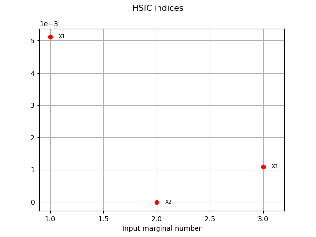
- 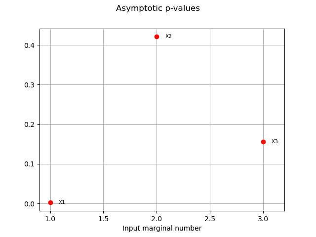
- 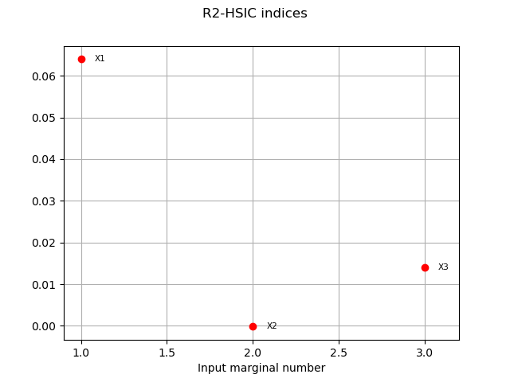
- 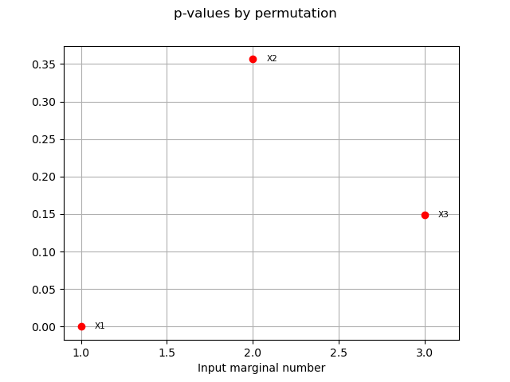
The Target HSIC estimator¶
We now perform the target analysis which consists in using a filter function over the output.
Defining a filter function¶
We define a filter function on the output variable for the target
analysis. In this example we use the function where is the distance
to a well-chosen interval.
We first define a critical domain: in our case that is the interval.
criticalDomain = ot.Interval(5, float('inf'))
We have access to the distance to this domain thanks to the
DistanceToDomainFunction class.
dist2criticalDomain = ot.DistanceToDomainFunction(criticalDomain)
We define the parameters in our function from the output sample
s = 0.1 * Y.computeStandardDeviation()[0]
We now define our filter function by composition of the parametrized function and the distance function.
f = ot.SymbolicFunction(["x", "s"], ["exp(-x/s)"])
phi = ot.ParametricFunction(f, [1], [s])
filterFunction = ot.ComposedFunction(phi, dist2criticalDomain)
We choose an unbiased estimator
estimatorType = ot.HSICUStat()
and build the HSIC estimator
targetHSIC = ot.HSICEstimatorTargetSensitivity(
covarianceModelCollection, X, Y, estimatorType, filterFunction
)
We get the R2-HSIC indices:
R2HSICIndices = targetHSIC.getR2HSICIndices()
print("\n Target HSIC analysis")
print("R2-HSIC Indices: ", R2HSICIndices)
Out:
Target HSIC analysis
R2-HSIC Indices: [0.0321494,0.00293329,-0.00627235]
and the HSIC indices:
HSICIndices = targetHSIC.getHSICIndices()
print("HSIC Indices: ", HSICIndices)
Out:
HSIC Indices: [0.000192388,1.84164e-05,-3.64356e-05]
The p-value by permutation.
pvperm = targetHSIC.getPValuesPermutation()
print("p-value (permutation): ", pvperm)
Out:
p-value (permutation): [0,0.257426,0.584158]
We have an asymptotic estimate of the value for this estimator.
pvas = targetHSIC.getPValuesAsymptotic()
print("p-value (asymptotic): ", pvas)
Out:
p-value (asymptotic): [0.0339153,0.297131,0.589994]
We vizualise the results.
graph5 = targetHSIC.drawHSICIndices()
view5 = otv.View(graph5)
graph6 = targetHSIC.drawPValuesAsymptotic()
view6 = otv.View(graph6)
graph7 = targetHSIC.drawR2HSICIndices()
view7 = otv.View(graph7)
graph8 = targetHSIC.drawPValuesPermutation()
view8 = otv.View(graph8)
- 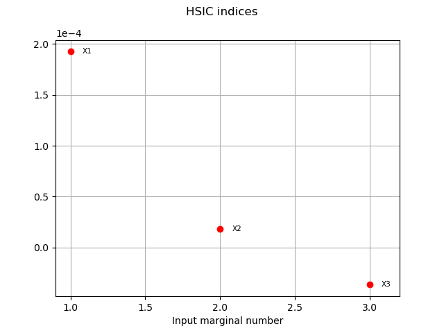
- 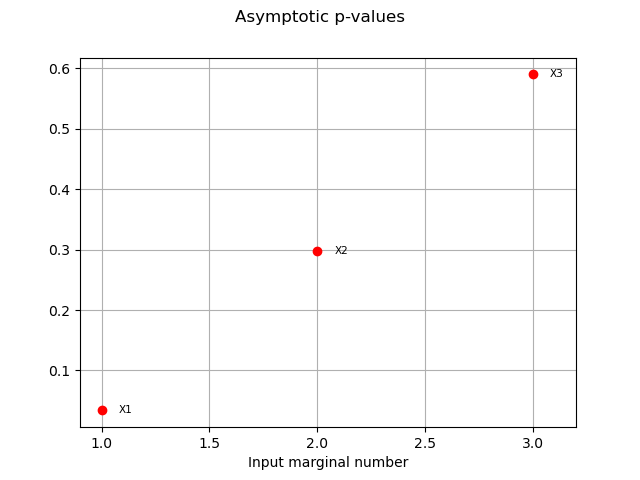
- 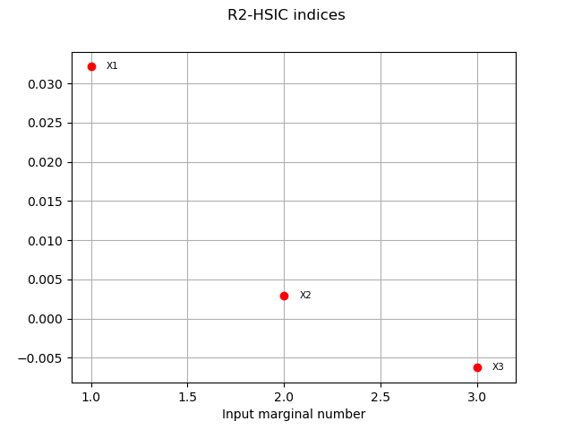
- 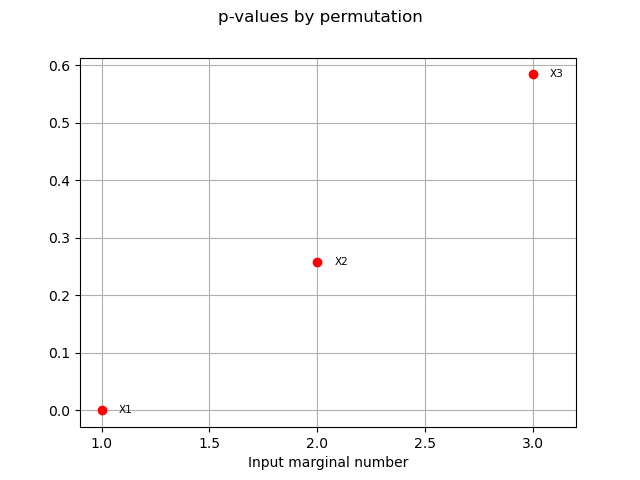
The Conditional HSIC estimator¶
In this last section we preprocess the input variables: that is the conditional analysis. To do so, one has to work with a weight function. Here the weight function is the filter function we used previously.
weightFunction = filterFunction
We have to select a biased -but asymptotically unbiased- estimator
estimatorType = ot.HSICVStat()
We build the conditional HSIC estimator
condHSIC = ot.HSICEstimatorConditionalSensitivity(
covarianceModelCollection, X, Y, estimatorType, weightFunction
)
We get the R2-HSIC indices:
R2HSICIndices = condHSIC.getR2HSICIndices()
print("\n Conditional HSIC analysis")
print("R2-HSIC Indices: ", R2HSICIndices)
Out:
Conditional HSIC analysis
R2-HSIC Indices: [0.250897,0.00916689,0.229481]
and the HSIC indices:
HSICIndices = condHSIC.getHSICIndices()
print("HSIC Indices: ", HSICIndices)
Out:
HSIC Indices: [0.0121911,0.000544078,0.0117331]
For the conditional estimator we only have access to the p-value by permutation:
pvperm = condHSIC.getPValuesPermutation()
print("p-value (permutation): ", pvperm)
print("")
Out:
p-value (permutation): [0,0.930693,0]
We can vizualise the results thanks to the various drawing methods.
graph9 = condHSIC.drawHSICIndices()
view9 = otv.View(graph9)
graph10 = condHSIC.drawR2HSICIndices()
view10 = otv.View(graph10)
graph11 = condHSIC.drawPValuesPermutation()
view11 = otv.View(graph11)
- 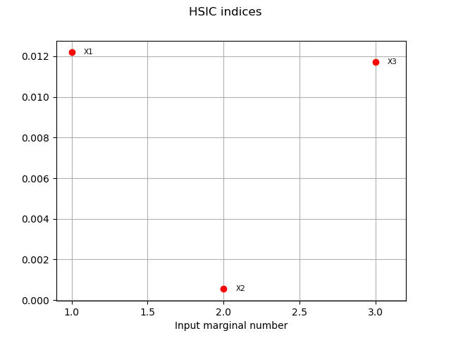
- 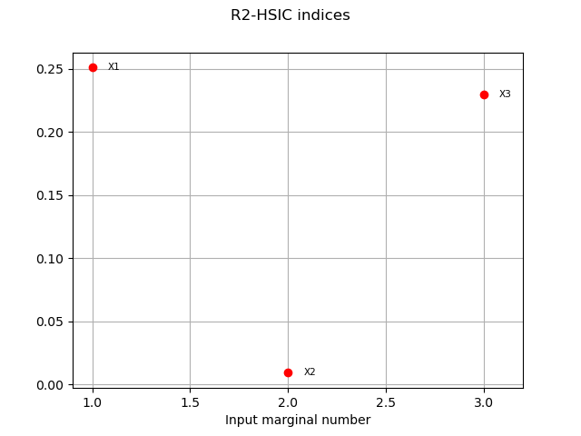
- 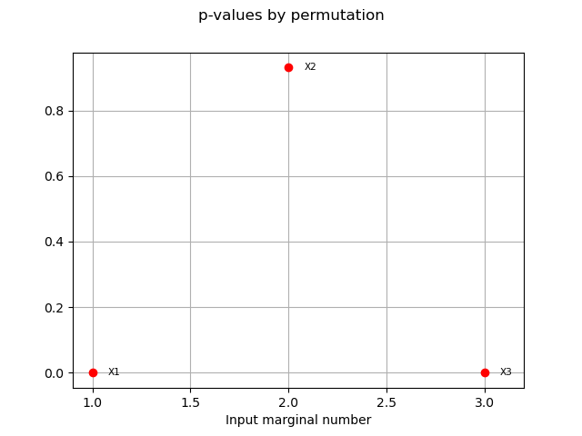
otv.View.ShowAll()
Total running time of the script: ( 0 minutes 2.805 seconds)